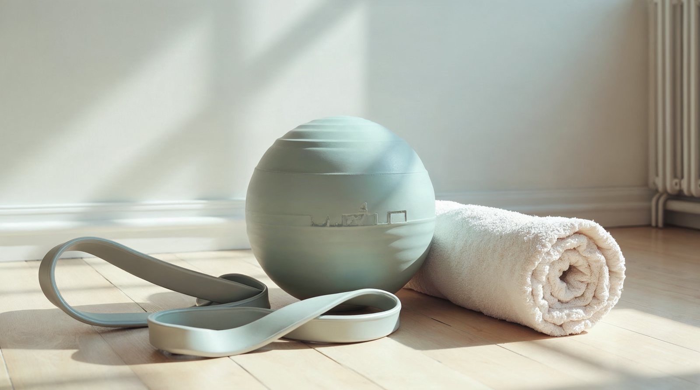
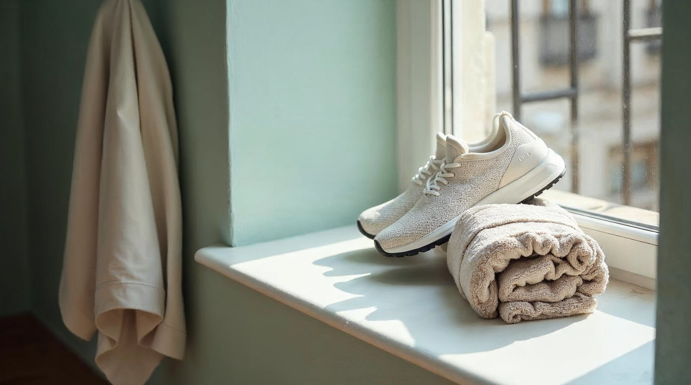
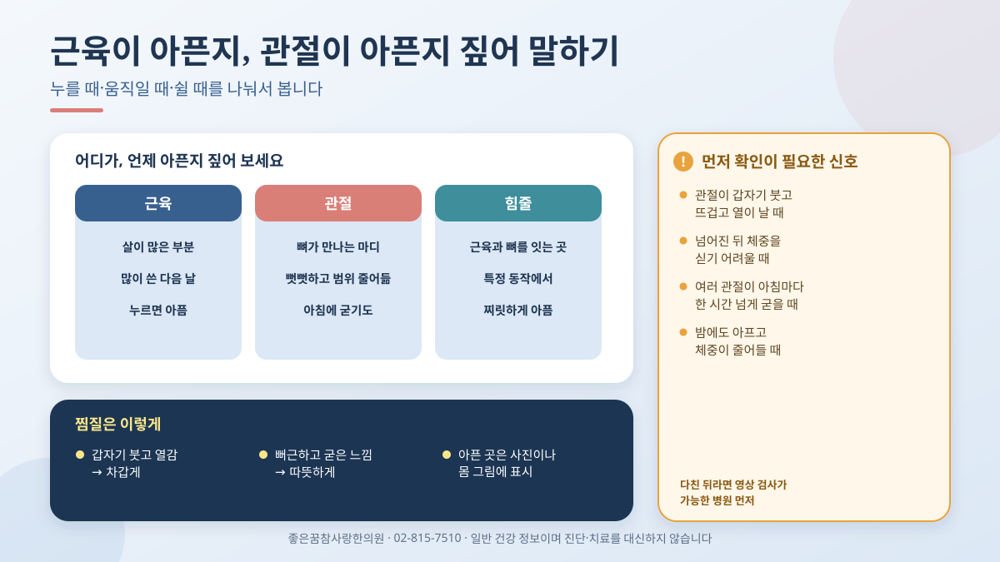

이종호 한의사 감수좋은꿈참사랑한의원 대표원장 (한의사 면허번호 19769)발행 2026-11-23 · 수정 2026-11-26
이 글의 차례
- 왜 이런 불편이 생길 수 있나요
- 근육·힘줄·관절, 짚는 자리로 이렇게 나눠 보세요
- 왜 힘줄 통증은 쉬었다가도 다시 아플까요?
- 먼저 이렇게 여쭙니다
- 예를 들면 이렇게 말할 수 있습니다
- 스스로 점검해 보세요
- 일상에서 먼저 해 볼 수 있는 것
- 아픈 동작은 이렇게 보여 주세요
- 찜질은 언제 차갑게, 언제 따뜻하게 하나요?
- 한의원에서 함께 살필 수 있는 경우
- 첫 방문은 이렇게 진행합니다
- 이렇게 기록해 오시면 상담이 쉬워집니다
- 아파도 운동이나 일을 계속해도 될까요?
- 다시 오시면 무엇을 여쭙나요?
- 얼마나 지켜보고, 언제 상담하면 좋을까요
- 이런 증상은 먼저 확인이 필요합니다
- 관련 글
통증을 말할 때 "여기가 아파요"라고 손으로 짚어 주시는 것만으로도 많은 정보가 됩니다. 아픈 곳이 근육 쪽인지 관절 쪽인지, 누르면 아픈지 움직일 때 아픈지 스스로 나눠 보면 어떤 확인이 먼저 필요한지 정하기 쉬워집니다.
아침에 컵을 들다 팔꿈치가 찌릿하거나, 계단을 내려가다 무릎이 시큰한 순간이 있습니다. 그런데 막상 진료실에 앉으면 정확히 어디였는지 손이 머뭇거리지요.
왜 이런 불편이 생길 수 있나요
- 근육 통증은 많이 쓴 다음 날 뭉치고 당기며, 누르면 아픈 경우가 많습니다.
- 관절 통증은 마디 주변이 뻣뻣하고 움직이는 범위가 줄어드는 형태로 오는 경우가 많습니다.
- 힘줄은 근육과 뼈를 잇는 부분이라 특정 동작에서 찌릿하게 아프기도 합니다.
- 같은 자리라도 아침에 굳어서 아픈지, 저녁에 많이 쓴 뒤 아픈지에 따라 먼저 살필 것이 달라집니다.
- 관절이 붓고 뜨겁다면 근육을 많이 쓴 뒤의 뻐근함보다 염증이나 다른 질환과 관련되어 있을 수 있습니다.
근육·힘줄·관절, 짚는 자리로 이렇게 나눠 보세요
- 근육 쪽: 살이 두툼한 부분이 넓게 뻐근하고, 손바닥으로 문지르게 됩니다. 눌렀을 때 아프면서도 시원한 느낌이 섞여 있다고 말씀하시는 분이 많습니다.
- 힘줄 쪽: 뼈가 튀어나온 자리 바로 옆이나 근육이 가늘어지는 끝부분에 손가락 하나로 짚을 수 있는 아픈 점이 있습니다. 특정 동작에서 찌릿하고, 가만히 있으면 덜한 경우가 많습니다.
- 관절 쪽: 뼈와 뼈가 만나는 마디 자체가 뻑뻑하거나 붓는 느낌입니다. 구부리고 펴는 범위가 줄고, 움직일 때 걸리거나 소리가 난다고 하시기도 합니다.
말로 옮기면 근육은 "넓게 뭉쳤어요", 힘줄은 "딱 여기를 누르면 아파요", 관절은 "마디가 뻑뻑하고 잘 안 굽혀져요"에 가깝습니다. 어느 문장이 가장 비슷한지 떠올려 보시면 됩니다.
물론 셋이 딱 나뉘지 않는 경우도 많습니다. 관절이 불편하면 주변 근육이 함께 굳고, 근육이 오래 굳으면 힘줄 끝이 당기기도 합니다. 그래서 가장 먼저 시작된 자리와 지금 가장 아픈 자리를 따로 말씀해 주시면 흐름을 읽기 쉽습니다.
아픈 시각도 함께 봅니다. 아침에 일어났을 때 가장 굳고 움직이면서 풀리는지, 하루 종일 쓰고 난 저녁에 더 뻐근한지에 따라 살필 쪽이 달라집니다. 관절도 많이 쓴 날 저녁에 더 아플 수 있어 시각 하나로 나누지는 않지만, 하루 중 언제 가장 아픈지 한 단어로 적어 주시면 좋은 단서가 됩니다.
왜 힘줄 통증은 쉬었다가도 다시 아플까요?
힘줄은 근육보다 피가 덜 가는 조직이라 회복에 시간이 더 걸리는 편입니다. 며칠 쉬면 덜해진 것 같다가도 같은 동작을 다시 하면 그 자리가 금세 아파 오는 일이 되풀이되기 쉽습니다.
그래서 힘줄 쪽 통증은 완전히 쉬는 것보다, 아픈 동작은 줄이되 아프지 않은 범위에서 조금씩 움직이는 것이 도움이 되는 경우가 많습니다. 어떤 동작에서 아픈지, 어느 정도 힘을 줄 때부터 아픈지를 적어 두시면 그 범위를 함께 정하기 쉽습니다.

먼저 이렇게 여쭙니다
- 아픈 곳이 살이 많은 부분인가요, 뼈가 만나는 마디인가요?
- 손으로 누르면 아픈가요, 움직일 때만 아픈가요?
- 붓거나 열이 나거나 붉어진 곳이 있나요?
- 아침에 뻣뻣한 시간이 있다면 얼마나 이어지나요?
- 아프기 시작한 날 특별히 한 일이 있나요?
예를 들면 이렇게 말할 수 있습니다
- 예를 들어 마우스를 오래 쓰는 직장인이 팔꿈치 바깥쪽이 아프다면, 뼈가 튀어나온 자리 바로 아래를 누르면 아프고 컵을 들 때 찌릿하다는 식으로 짚는 자리와 아픈 동작을 함께 말해 주시면 힘줄 쪽인지 살피는 단서가 됩니다.
- 예를 들어 이삿짐을 나른 다음 날 허리 양옆의 살이 많은 곳이 넓게 뻐근하고 누르면 아프다면, 근육을 많이 쓴 뒤의 뻐근함인 경우가 많습니다. 다만 다리로 저림이 내려간다면 따로 꼭 말씀해 주세요.
- 예를 들어 어르신이 아침마다 손가락 마디가 굳고 마디 자체가 붓는 느낌이라면, 살보다 뼈가 만나는 자리가 불편한 경우입니다. 몇 개의 마디가, 양손에 비슷하게, 아침에 몇 분 동안 굳는지 적어 오시면 어떤 확인이 먼저인지 정하기 쉽습니다.
스스로 점검해 보세요
- 아픈 곳을 한 손가락으로 짚을 수 있는지, 손바닥으로 넓게 문지르게 되는지
- 누르면 아픈지, 누를 때는 괜찮고 움직일 때만 아픈지
- 계단 내려가기나 컵 들기처럼 특정 동작 한 가지에서만 아픈지
- 많이 쓴 다음 날 시작됐고 며칠 사이 조금씩 덜해지는지
- 마디가 붓거나 뜨겁고 붉은 빛을 띠는지
- 아침에 굳는 시간이 길고 여러 관절이 함께 그런지
- 가만히 있을 때나 밤에도 계속 아픈지
앞의 네 가지에 대한 답을 적어 오시면 근육·힘줄 쪽인지 관절 쪽인지 단서를 모으는 데 도움이 됩니다. 뒤의 세 가지에 해당한다면 언제부터 그랬는지도 함께 적어 두세요.
일상에서 먼저 해 볼 수 있는 것
- 많이 쓴 근육은 다음 날 가볍게 움직이며 풀고, 아픈 동작은 며칠 줄이기
- 삐끗하거나 부딪친 뒤 붓고 열감이 있으면 차갑게, 뻐근하고 굳은 느낌이면 따뜻하게 찜질하기
- 같은 동작을 반복하는 일은 중간중간 쉬는 시간 두기
- 아침에 뻣뻣하다면 일어나기 전 누운 채로 관절을 천천히 움직여 보기
- 아픈 자리를 펜으로 작게 표시하거나 사진으로 찍어 두고, 며칠 사이 범위가 넓어지는지 좁아지는지 비교하기
예를 들어 무릎 앞쪽이 아프다면 계단을 오를 때와 내려갈 때, 오래 앉았다 일어날 때 중 언제 아픈지 하루씩 나눠 적어 보세요. 같은 동작에서 반복되면 그 동작을 진료실에서 직접 보여 주시면 됩니다.
아픈 동작은 이렇게 보여 주세요
진료실에서 어떤 동작이 아픈지 여쭈면 막상 그 자리에서 떠오르지 않는다는 분이 많습니다. 그래서 집에서 아팠던 순간을 짧은 동영상으로 찍어 오시거나, 아팠던 동작의 이름을 메모해 오시길 권합니다.
예를 들어 "선반 위 그릇을 꺼내려고 팔을 올릴 때", "운전석에서 뒤를 돌아볼 때", "의자에서 일어나 첫 걸음을 뗄 때"처럼 상황을 구체적으로 적어 주시면 그 동작을 진료실에서 천천히 따라 해 보며 어느 자리가 불편한지 함께 찾습니다.
아픈 정도도 0부터 10까지 숫자로 말씀해 주시면 좋습니다. 같은 동작을 같은 숫자로 말해 두면 다음 진료에서 무엇이 달라졌는지 함께 비교하기가 쉬워집니다.
찜질은 언제 차갑게, 언제 따뜻하게 하나요?
삐끗하거나 부딪친 직후 붓고 열감이 있다면 처음 하루 이틀은 차갑게 하는 경우가 많습니다. 얼음은 수건에 싸서 15분 안쪽으로 대고, 피부가 너무 차가워지지 않게 쉬었다가 다시 대 주세요.
붓기나 열감 없이 뻐근하고 굳은 느낌이라면 따뜻하게 하는 편을 먼저 권합니다. 아침에 굳는 관절이나 오래 앉은 뒤 뭉친 근육이라면 따뜻한 샤워나 찜질로 데운 뒤 천천히 움직여 보세요.
찜질 뒤 오히려 더 아프거나 붓는다면 그 방법은 멈추고 진료 때 말씀해 주세요. 어느 쪽이 맞는지 헷갈릴 때도 진료 때 여쭤 주시면 됩니다.

한의원에서 함께 살필 수 있는 경우
- 많이 쓴 다음 날 근육이 뭉치고 당기는 경우 근육 긴장과 사용 습관을 함께 살핍니다.
- 관절 주변이 뻐근하고 움직임이 줄어든 경우 관절 주변 근육과 자세를 함께 살핍니다.
- 날씨가 추워지면 몸이 굳고 불편한 경우 몸의 온기와 하루의 움직임을 함께 살핍니다.
통증으로 오셨어도 저는 잠과 소화, 몸의 온기를 함께 여쭙습니다. 잘 먹고, 잘 싸고, 잘 자고, 마음 편하고, 몸 따뜻하게, 이 다섯 가지를 몸이 회복하는 바탕으로 보기 때문입니다. 잠을 못 잔 날에는 같은 통증도 더 크게 느끼는 분이 많습니다.

첫 방문은 이렇게 진행합니다
좋은꿈참사랑한의원의 첫 진료는 대체로 아래 순서로 진행합니다.
- 맥부터 짚기: 모든 분의 맥을 먼저 짚고, 짚는 동안에도 언제, 무엇을 하다 아프기 시작했는지, 누를 때·움직일 때·가만히 있을 때 중 언제 아픈지 여쭙습니다. 필요에 따라 혀와 배도 살펴 잠과 피로, 몸의 온기 같은 바탕 상태를 함께 봅니다.
- 짚어 보고 움직여 보기: 아픈 자리를 직접 짚어 주시면 그 주변을 눌러 보고, 아프게 만드는 동작을 함께 해 보며 근육 쪽인지 관절 쪽인지 단서를 모읍니다.
- 필요하면 초음파: 필요하다고 판단될 때 초음파로 힘줄과 근육, 관절 주변의 붓기를 살핍니다.
- 방향 정하기: 상태에 맞춰 침·약침·추나 등을 정하고, 힘줄 쪽 통증이 오래간다면 체외충격파를 쓸지도 상의합니다. 귀가 전에는 집에서 피할 동작과 다음에 확인할 움직임을 알려 드립니다.
이렇게 기록해 오시면 상담이 쉬워집니다
- 아픈 곳을 몸 그림에 표시하거나 사진으로 남긴 것
- 누를 때, 움직일 때, 가만히 있을 때 중 언제 아픈지
- 아프게 만든 동작이나 일
- 붓기나 열감이 있었던 날의 사진
몸 그림에 표시할 때는 아픈 자리를 점으로 찍을지, 면으로 칠할지부터 정해 보세요. 한 손가락으로 짚히는 자리는 점, 넓게 뻐근한 자리는 색칠로 나타내면 근육 쪽인지 힘줄 쪽인지 구분하는 데 도움이 됩니다.
통증이 다른 곳으로 뻗친다면 화살표로 방향을 그려 주세요. 예를 들어 엉덩이에서 허벅지 뒤로 내려가는지, 목에서 팔로 내려가는지에 따라 살펴볼 범위가 달라집니다. 저림이 함께 있다면 그 자리는 다른 색으로 표시해 주시면 좋습니다.
양쪽을 비교해 보는 것도 방법입니다. 아픈 쪽과 반대쪽을 같은 힘으로 눌러 보고, 같은 동작을 해 보며 차이를 적어 오시면 진료실에서 확인할 순서를 정하기가 훨씬 쉬워집니다.
아파도 운동이나 일을 계속해도 될까요?
많이 받는 질문인데, 어느 쪽이 아픈지에 따라 답이 조금씩 다릅니다. 근육을 많이 쓴 뒤의 뻐근함이라면 가볍게 걷거나 스트레칭하며 움직이되, 아픈 동작을 억지로 반복하는 것만 며칠 줄여 주세요.
힘줄 쪽이라면 그 힘줄을 쓰는 동작의 횟수와 무게를 먼저 줄입니다. 예를 들어 테니스나 골프로 팔꿈치가 아프다면 연습 시간을 절반으로 줄이고, 다음 날 아침의 통증 숫자를 적어 보며 조금씩 늘려 가는 방식을 권합니다.
관절이 붓고 뜨거운 날에는 그 관절을 많이 쓰는 운동을 쉬어 주세요. 이런 일이 처음이거나 되풀이된다면 운동을 다시 늘리기 전에 왜 붓는지부터 확인받는 것이 순서입니다. 일 때문에 쉬기 어렵다면 그 상황을 말씀해 주시면 일하면서 줄일 수 있는 동작을 함께 찾아봅니다.
다시 오시면 무엇을 여쭙나요?
두 번째 진료부터는 처음에 짚어 주셨던 자리가 그대로인지, 넓어졌는지 좁아졌는지부터 여쭙니다. 그리고 지난번 아팠던 동작을 다시 해 보며 0부터 10까지의 숫자가 어떻게 달라졌는지 비교합니다.
집에서 피하기로 한 동작을 지켜 보셨는지, 새로 아파진 동작은 없는지도 이어서 여쭙니다. 지키기 어려웠다면 그 사정부터 듣고, 하던 일을 이어 가면서 할 수 있는 방법을 다시 함께 정합니다.
아프기 시작한 계기가 분명하지 않아도 괜찮습니다. 특별히 다친 일 없이 서서히 아파졌다면 "언제부터인지 모르게"라고 말씀해 주시고, 그 무렵 바뀐 일이나 운동, 의자와 신발 같은 생활의 변화를 떠올려 보세요.

얼마나 지켜보고, 언제 상담하면 좋을까요
- 많이 쓴 뒤 생긴 근육 뻐근함은 아픈 동작을 줄이고 가볍게 움직이며 며칠에서 1주쯤 지켜볼 수 있는 경우가 많습니다.
- 1~2주가 지나도 줄지 않거나 같은 동작에서 아픈 일이 되풀이되면 상담을 받아 보세요. 힘줄 쪽 통증은 쉬었다가도 같은 동작에서 다시 아픈 경우가 있어 그 동작을 적어 오시면 도움이 됩니다.
- 관절이 붓고 뜨거운 일이 되풀이되거나, 아침에 여러 관절이 한 시간 넘게 굳는 일이 몇 주째 이어지면 내과·류마티스내과 확인을 먼저 권합니다.
아픈 자리를 손가락으로 짚어 보는 일은 생각보다 어렵습니다. 아픈 몸으로 하루를 버티다 보면 어디가 먼저였는지도 흐려지니까요. 다음에 오시면 처음 아팠던 자리와 지금 가장 아픈 자리를 손으로 짚어 보여 주시는 것부터 함께 하겠습니다.
이런 증상은 먼저 확인이 필요합니다
- 관절이 갑자기 붓고 뜨거워지는 경우(열이 함께 나면 더 급합니다)
- 넘어지거나 부딪친 뒤 체중을 싣기 어렵거나 관절 모양이 달라 보이는 경우
이런 신호가 있으면 한의원보다 가까운 병원이나 응급실을 먼저 찾으세요.
관련 글

여쭙는 것
- 아픈 곳이 살이 많은 부분인가요, 뼈가 만나는 마디인가요?
- 손으로 누르면 아픈가요, 움직일 때만 아픈가요?
- 붓거나 열이 나거나 붉어진 곳이 있나요?
생활에서 해 볼 것
- 많이 쓴 근육은 다음 날 가볍게 움직이며 풀고, 아픈 동작은 며칠 줄이기
- 삐끗하거나 부딪친 뒤 붓고 열감이 있으면 차갑게, 뻐근하고 굳은 느낌이면 따뜻하게…
- 같은 동작을 반복하는 일은 중간중간 쉬는 시간 두기
한의원에서 함께 살필 것
- 많이 쓴 다음 날 근육이 뭉치고 당기는 경우 근육 긴장과 사용 습관을 함께 살핍니다.
- 관절 주변이 뻐근하고 움직임이 줄어든 경우 관절 주변 근육과 자세를 함께 살핍니다.
- 날씨가 추워지면 몸이 굳고 불편한 경우 몸의 온기와 하루의 움직임을 함께 살핍니다.
먼저 확인이 필요한 신호
- 관절이 갑자기 붓고 뜨거워지는 경우(열이 함께 나면 더 급합니다)
- 넘어지거나 부딪친 뒤 체중을 싣기 어렵거나 관절 모양이 달라 보이는 경우
한눈에 보는 표
| 구분 | 핵심 |
|---|---|
| 여쭙는 것 | 아픈 곳이 살이 많은 부분인가요, 뼈가 만나는 마디인가요? 손으로 누르면 아픈가요, 움직일 때만 아픈가요? |
| 생활에서 해 볼 것 | 많이 쓴 근육은 다음 날 가볍게 움직이며 풀고, 아픈 동작은 며칠 줄이기 삐끗하거나 부딪친 뒤 붓고 열감이 있으면 차갑게, 뻐근하고 굳은 느낌이면 따뜻하게 찜질하기 |
| 한의원에서 함께 살필 것 | 많이 쓴 다음 날 근육이 뭉치고 당기는 경우 근육 긴장과 사용 습관을 함께 살핍니다. 관절 주변이 뻐근하고 움직임이 줄어든 경우 관절 주변 근육과 자세를 함께 살핍니다. |
| 먼저 확인이 필요한 신호 | 관절이 갑자기 붓고 뜨거워지는 경우(열이 함께 나면 더 급합니다) 넘어지거나 부딪친 뒤 체중을 싣기 어렵거나 관절 모양이 달라 보이는 경우 |
자주 묻는 질문
아픈 곳이 계속 옮겨 다니면 어떻게 말하나요?
옮겨 다닌 순서와 날짜를 적어 오시면 됩니다. 어디가 오래 아팠는지도 함께 알려 주세요.
엑스레이나 초음파 결과가 있으면요?
최근 검사 결과가 있다면 가져와 주세요. 이야기를 이어 가는 데 도움이 됩니다.
한의원에서도 초음파로 볼 수 있나요?
필요하다고 판단될 때 좋은꿈참사랑한의원에서 초음파로 아픈 부위를 함께 살펴봅니다. 영상 판독이나 뼈·관절 깊은 곳의 확인이 필요하면 영상 검사가 가능한 의료기관을 안내합니다.
아픈 곳이 두 군데 이상이면 어떻게 말하나요?
가장 불편한 곳부터 순서를 정해 말씀해 주시고, 한 곳이 아플 때 다른 곳도 함께 아픈지, 따로 아픈지도 알려 주세요.
좋은꿈참사랑한의원은 재진 때 지난번 이야기부터 이어서 여쭙니다. 진료시간과 예약은 오시는 길에서 확인하세요.
어디서 상담받을 수 있나요?
좋은꿈참사랑한의원은 서울 동작구 만양로2길 2 신성빌딩 3층·5층(서울 동작구 상도동, 7호선 상도역 3번 출구 근처)에 있습니다. 한의사 3명(이종호 대표원장, 조영기 수석진료원장, 정원영 진료원장)이 진료합니다. 진료시간은 평일 09:30~20:00(점심 13:00~14:00), 토·일·공휴일 09:30~15:00이며, 방문 전 전화로 확인을 권합니다. 예약은 네이버 예약, 카카오톡 상담, 전화 02-815-7510로 받습니다.
이 글은 일반적인 건강 정보이며 개인의 진단이나 치료를 대신하지 않습니다. 증상이 있거나 복용 중인 약이 있다면 진료를 통해 확인하세요. 치료 효과는 개인마다 다를 수 있습니다.
작성 기준: 일반적으로 알려져 있는 건강 정보를 참고해 정리했습니다(대표원장 감수). 증상 기록은 1~2주 동안 하루 1회, 비슷한 시간에 적어 오시면 지난 상태와 비교하기 쉽습니다.